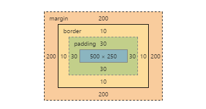
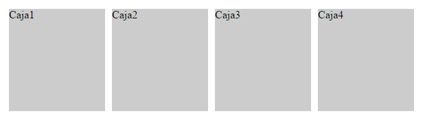

Cuando los navegadores procesan el contenido Html y Css crean una caja para representar cada elemento. Los factores que se tienen en cuenta son:
Los elementos de bloque:
Los elementos en línea:
See the Pen jrVgOO by Francisco (@franciscomarinas) on CodePen.
Por sus características, los elementos de bloque no pueden (no deben) insertarse dentro de elementos en línea y solo pueden aparecer dentro de otros elementos de bloque. En cambio, un elemento en línea puede aparecer tanto dentro de un elemento de bloque como dentro de otro elemento en línea.
a, abbr, acronym, b, basefont, bdo, big, br, cite, code, dfn, em, font, i, img, input, kbd, label, q, s, samp, select, small, span, strike, strong, sub, sup,textarea,tt,u,var.
address, blockquote, center, dir, div, dl, fieldset, form, h1, h2, h3, h4, h5, h6, hr, isindex, menu, noframes, noscript, ol, p, pre, table, ul, dd, dt, frameset, li, tbody, td, tfoot, th, thead, tr.
Los siguientes elementos pueden ser en línea y de bloque según las circunstancias: button, del, iframe, ins, map, object, script.
El tamaño de una caja en los elementos de bloque tiene en cuenta el valor de width y height, en donde se alojará el contenido que aniden, el padding asignado se añadirá a estos haciendo crecer la caja a un tamaño (width/height)+padding. Lo mismo acurre con el border que se añade al tamaño que ocupan en el fluo normal de la págia web(width/height)+padding+border. A esto habría que añadir finalmente el margin que le asignemos al propio elemento.
El padding del elemento padre no se debe de considerar en la definición del tamaño de la caja por no ser una propiedad de la caja sino de su padre.

HTML
<div id="caja1"></div>
CSS
#caja1{
margin: 200px;
border: 10px solid red;
padding: 30px;
height: 250px;
width: 500px;
background: rgba(33,33,33,.5);
}
La propiedad box-sizing se usa para modificar las propiedades por defecto del CSS box model que calculan el alto y el ancho de los elementos.
See the Pen box-sizing by Francisco (@franciscomarinas) on CodePen.
La propiedad overflow especifica si recortar contenido, se dibujan barras de desplazamiento o si se muestra el contenido excedente en un elemento de bloque.
See the Pen Overflow by Francisco (@franciscomarinas) on CodePen.
El elemento se posiciona, respecto a su esquina superior izquierda, en coordenadas de top, left, bottom, right respecto, a la esquina superior izquierda, del elemento padre que tenga una propiedad position asignada, y si no el body.
Pasan a situarse en otro nivel y el espacio que acupaban es remplazado por el flujo normal del documento html.
See the Pen position: absolute; by Francisco (@franciscomarinas) on CodePen.
El elemento se posiciona respento a su propia coordenanda superior izquierda, aunque la posición original sigue formando parte del flujo del documento.
See the Pen position: relative; by Francisco (@franciscomarinas) on CodePen.
Se escapa del flujo normal del documento html y su espacio es ocupado por este flujo.
See the Pen position: fixed; by Francisco (@franciscomarinas) on CodePen.
La caja deja de pertenecer al flujo normal de la página, el resto de cajas ocupan el lugar dejado por la caja flotante. y se desplaza hasta la zona más a la izquierda o más a la derecha de la posición en la que originalmente se encontraba.
See the Pen Posicionamiento Flotante by Francisco (@franciscomarinas) on CodePen.
Si la caja 1 se posiciona de forma flotante hacia la izquierda:
La caja 1 es de tipo flotante, por lo que desaparece del flujo normal de la página y el resto de cajas ocupan su lugar. El resultado es que la caja 2 ahora se muestra donde estaba la caja 1 y la caja 3 se muestra donde estaba la caja 2.
Al mismo tiempo, la caja 1 se desplaza todo lo posible hacia la izquierda de la posición en la que se encontraba. El resultado es que la caja 1 se muestra encima de la nueva posición de la caja 2 y tapa todos sus contenidos.
El propósito principal de un modelo de caja es hacer que sea posible dividir el espacio de la ventana en varias cajas y, así, crear las filas y columnas que formen un diseño web regular. Sin embargo, el Modelo de caja tradicional, aplicado desde la primera versión de CSS y ampliamente utilizado hasta hoy, fracasa en este sentido. No es posible definir de manera eficiente cómo se distribuyen las cajas y especificar su tamaño horizontal y vertical sin usar trucos y reglas intrincadas programadas por un tipo brillante en algún lugar del mundo.
El modelo de cajas flexible resuelve los problemas del Modelo de caja tradicional de una manera elegante representando las filas y columnas que diseñadores y usuarios realmente ven en pantalla consiguiendo un control total sobre el diseño, la posición y el tamaño de las cajas, la distribución de unas cajas dentro de otras, y la forma en la que estas usan y comparten el espacio disponible.
Un contenedor flexible es un elemento que permite que su contenido se adapte.
Características importantes de este modelo, como la orientación vertical y horizontal, se declaran en los contenedores.
Los elementos flexibles deben tener un elemento padre común dentro del cual puedan ser organizados, es decir, en este modelo cada conjunto de cajas tiene que estar anidado dentro de otra caja.
Un contenedor flexible se define con la propiedad display y puede ser descrito como un elemento de bloque con el valor flex o como un elemento en línea con el valor inline-flex.
Un contenedor flex utiliza ejes para describir la orientación de su contenido.
La especificación declara dos ejes que son independientes de la orientación: el eje principal y el eje transversal. En el eje principal es distribuido el contenido y por lo general equivale a la orientación horizontal, mientras que el transversal equivale a la orientación vertical. Si la orientación es modificada, los ejes se desplazan junto con el contenido.
Para que un elemento dentro de un contenedor flexible sea también flexible tiene que ser declarado como flex.
Para declarar una caja como flexible deberá dar como mínimo un valor de 1 al primer parámetro flex-grow. Este parámetro declara la relación de expansión del elemento, qué tanto crecerá el elemento dependiendo de la configuración de los elementos hermanos.
flex-shrink declara la relación de reducción o qué tanto se podrá ser reducido por el elemento según la configuración de sus hermanos.
flex-basis indica el tamaño inicial para el elemento que será considerado al distribuir el espacio libre entre todos los elementos que se encuentren dentro del contenedor.

HTML
<section id="contenedor">
<div id="caja1">Caja1</div>
<div id="caja2">Caja2</div>
<div id="caja3">Caja3</div>
<div id="caja4">Caja4</div>
</section>
CSS
#contenedor{
display: flex;
display: -webkit-flex;
width: 600px;
}
#caja1{
flex: 1;
-webkit-flex: 1;
background: #ccc;
height: 150px;
margin: 5px;
}
#caja2{
flex: 1;
-webkit-flex: 1;
background: #ccc;
height: 150px;
margin: 5px;
}
#caja3{
flex: 1;
-webkit-flex: 1;
background: #ccc;
height: 150px;
margin: 5px;
}
#caja4{
flex: 1;
-webkit-flex: 1;
background: #ccc;
height: 150px;
margin: 5px;
}
See the Pen Modelo de cajas flexible by Francisco (@franciscomarinas) on CodePen.
See the Pen Modelo de cajas flexible flex direction by Francisco (@franciscomarinas) on CodePen.
See the Pen Modelo de cajas flexible justify-content by Francisco (@franciscomarinas) on CodePen.
See the Pen Modelo de cajas flexible align-items by Francisco (@franciscomarinas) on CodePen.
See the Pen Modelo de cajas flexible align-items: stretch by Francisco (@franciscomarinas) on CodePen.